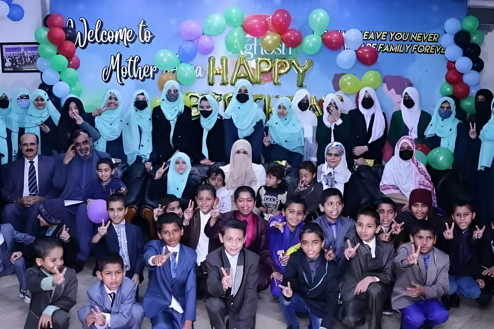

Who We Are ?
Aghosh Orphan Care Homes Lahore is the flagship project of Minhaj Welfare Foundation, founded by Shaykh ul Islam Dr. Muhammad Tahir-ul-Qadri. It was established in 2005 in response to the devastating earthquake that struck northern Pakistan. Aghosh is an education-centered orphanage, offering comprehensive support to orphaned children, from early childhood to postgraduate levels.
Donate NowOur Mission

Our primary mission is to ensure that every orphan child under our care receives high-quality education, career counseling, and guidance to secure a bright and successful future. We provide a nurturing and secure environment, offering excellent food, comfortable living arrangements, and emotional support. Aghosh caters to both boys and girls, ensuring a holistic upbringing that prepares them to become self-sufficient, productive members of society.
The Founder's Story
Aghosh Orphan Care Homes, a project initiated by the Minhaj Welfare Foundation (MWF), are the realization of the compassionate vision of Dr. Muhammad Tahir ul Qadri. A renowned scholar, humanitarian, and founder of Minhaj-ul-Quran International, Dr. Tahir ul Qadri has dedicated his life to serving humanity and providing support to the underprivileged.
The story of Aghosh begins with Dr. Qadri’s deep concern for the vulnerable sections of society, especially orphaned children who lack basic care, education, and protection. In many developing nations, including Pakistan, thousands of children are left without parental care due to various circumstances, often leading them into a cycle of poverty and neglect. Dr. Qadri recognized the critical need to address this issue and envisioned a project that would give these children a new life, full of opportunities, love, and dignity.
Driven by his Islamic values and inspired by the teachings of the Prophet Muhammad (PBUH) on caring for orphans, Dr. Tahir ul Qadri founded the Aghosh Orphan Care Homes. The term "Aghosh" itself means "embrace" in Urdu, symbolizing the protective and nurturing environment these homes provide to children.
Dr. Qadri's approach was holistic, aiming to meet the physical, emotional, educational, and spiritual needs of orphans. With this vision, the first Aghosh Orphan Care Home was established, offering not only a safe shelter but also a full range of services, including quality education, healthcare, psychological support, and vocational training to prepare children for independent, successful lives.
Under his leadership, Aghosh has expanded to several locations across Pakistan, providing care to hundreds of children who otherwise might have been deprived of a future. Dr. Tahir ul Qadri’s unwavering commitment to social welfare has turned Aghosh into a beacon of hope for orphaned children, reflecting his lifelong dedication to alleviating suffering and empowering the disadvantaged.
Today, Aghosh Orphan Care Homes continue to thrive, helping orphaned children grow in an environment of love, respect, and opportunity, all thanks to the compassionate vision of its founder, Dr. Muhammad Tahir ul Qadri.